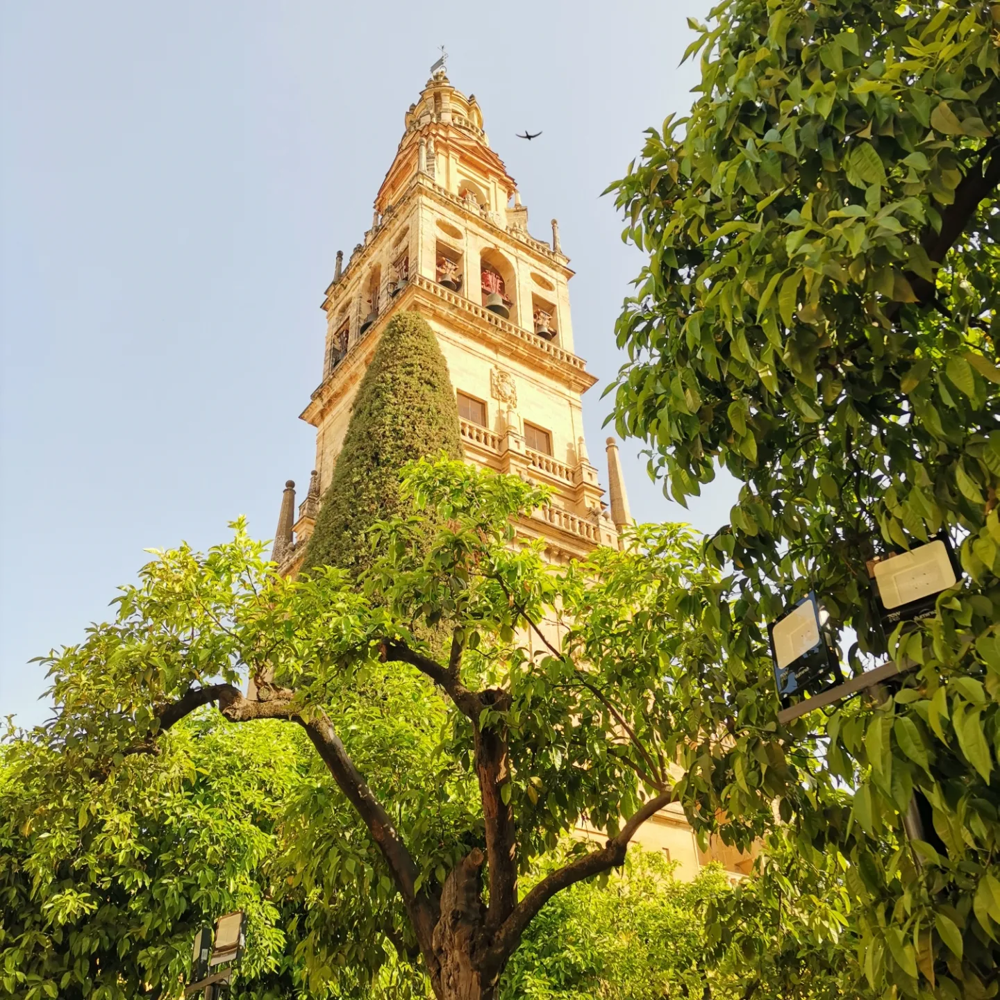
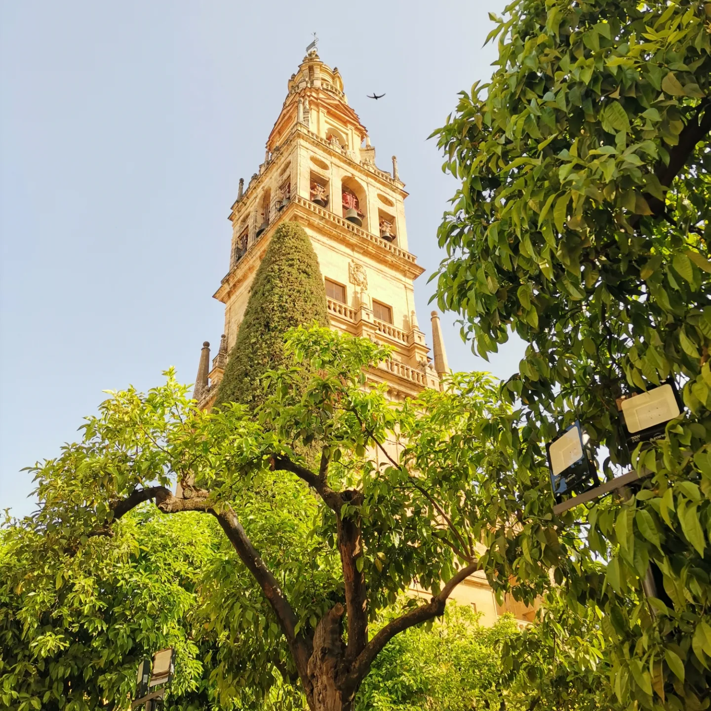
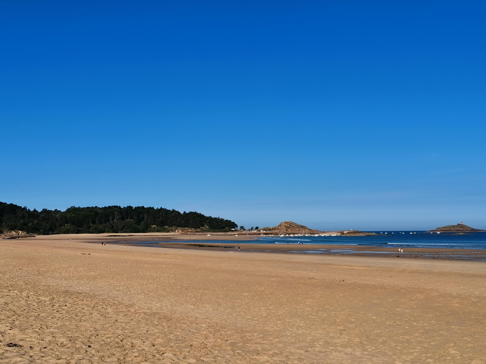
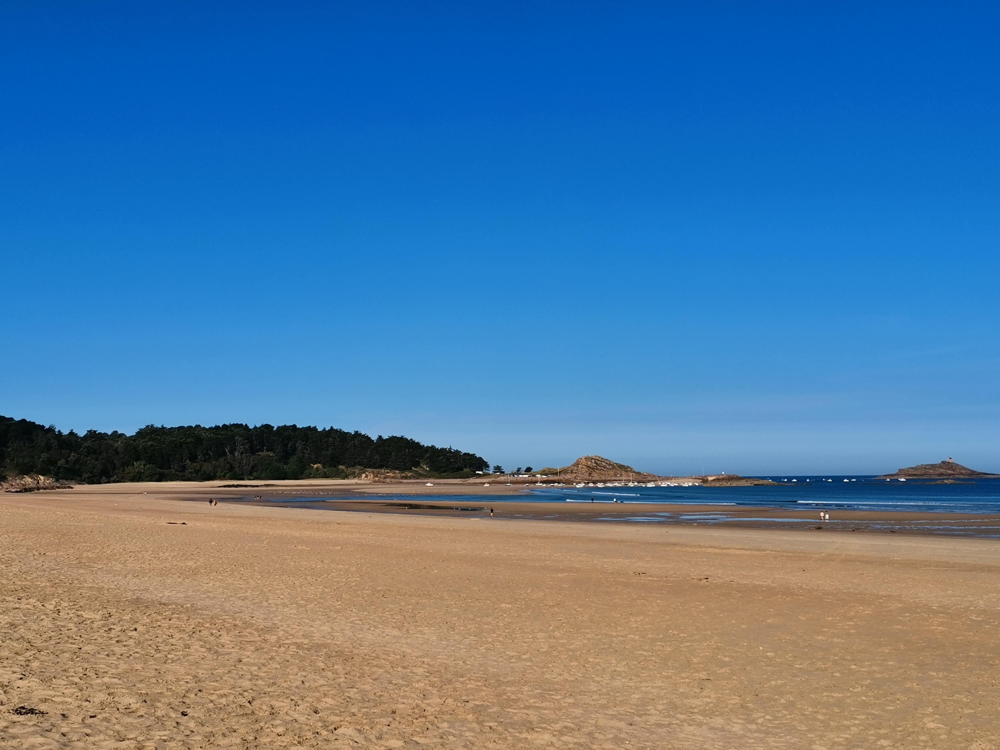

Le Vélo
Pratique en autodidacte du vélo depuis 2020, ce sport m'a permis de me surpasser en essayant chaque fois de battre les précédens reccords de distances
Pratique en autodidacte du vélo depuis 2020, ce sport m'a permis de me surpasser en essayant chaque fois de battre les précédens reccords de distances
La photographie est un moyen de m'exprimer, d'imortaliser des moments forts ou des lieux uniques. Vous pouvez voir différentes photos dans différents lieux commes des balades, des lieux chagés d'hitoire ou des lieux naturels.

 



 



Je suis tombé dedans depuis l'age de mes 10 ans. C'est un jeu rempli de stratégie ou chaque pièce déplacée peut nous faire gagner ou au contraire perdre la partie.
Je compare souvent ce jeu au domaine de la cybersécurité car chaque faille dans le placement des pions doit être corrigée avant que l'adversaire puisse y rentrer, c'est exactement comme dans le domaine de la cybersécurité